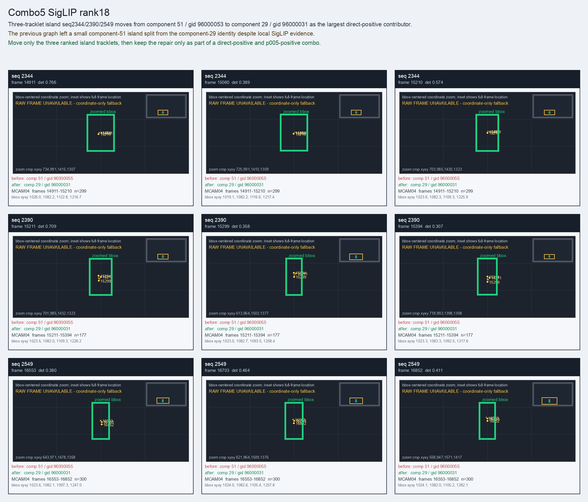

Combo5 SigLIP rank18
Three-tracklet island seq2344/2390/2549 moves from component 51 / gid 96000053 to component 29 / gid 96000031 as the largest direct-positive contributor.
Before
component 51, gid 96000055, component_size 159
component 51, gid 96000055, component_size 159
After
component 29, gid 96000031, component_size 48, decision_status post_seq6257_combo_probe
component 29, gid 96000031, component_size 48, decision_status post_seq6257_combo_probe
Evidence
target_sim=0.6421, target_margin=0.0289, source_rest_margin=0.4176
Raw frame
unavailable_coordinate_fallback
target_sim=0.6421, target_margin=0.0289, source_rest_margin=0.4176
Raw frame
unavailable_coordinate_fallback
Failure and fix
Old failure: The previous graph left a small component-51 island split from the component-29 identity despite local SigLIP evidence.
New implementation: Move only the three ranked island tracklets, then keep the repair only as part of a direct-positive and p005-positive combo.
BBox evidence

Moved tracklets
| seq | video | gid | component | frames | dets |
|---|---|---|---|---|---|
| 2344 | vlincs_MS01_MC0001_MCAM04_2024-03-Tc6 | 96000055 -> 96000031 | 51 -> 29 | 14911-15210 | 299 |
| 2390 | vlincs_MS01_MC0001_MCAM04_2024-03-Tc6 | 96000055 -> 96000031 | 51 -> 29 | 15211-15394 | 177 |
| 2549 | vlincs_MS01_MC0001_MCAM04_2024-03-Tc6 | 96000055 -> 96000031 | 51 -> 29 | 16553-16852 | 300 |